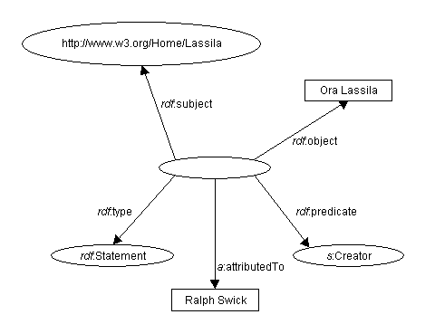
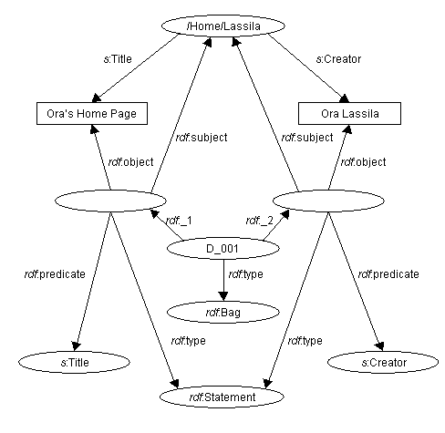
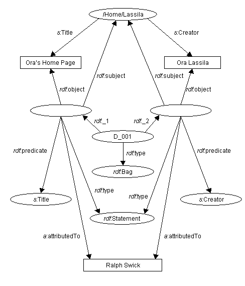

| 上一頁(P) | 上一層(T) | 下一頁(N) |
| 3. 容器 | 5. 正式的資源描述架構模型 |
除了產生網路資源的陳述式，資源描述架構也可以產生其它資源描述架構陳述式的陳述式，我們把這些陳述式稱為 higher-order 陳述式。為了產生另一個陳述式的陳述式，我們會為最初的陳述式建立一個模型，這個模型是一個新資源以讓我們可以附加額外的屬性。
陳述式由資源產生。一個陳述式的模型是個資源可讓我們能夠為已模型化的陳述式產生新的陳述式(higher-order 陳述式)。
例如，讓我們考慮這樣一個句子：
奧爾‧拉斯萊是資源 resource http://www.w3.org/Home/Lassila 的建立者。
資源描述架構會把這個句字看成是一件事實，如果我們以這樣的句子取代：
拉夫‧斯瑞克說奧爾‧拉斯萊是資源 http://www.w3.org/Home/Lassila 的建立者。
我們並沒有對資源 http://www.w3.org/Home/Lassila 陳述什麼，而是說明拉夫建立一個陳述式的事實。為了用資源描述架構陳述事實，我們必需把最初的句子模型化而成為有著四個屬性的資源。在知識表示社群中這種程序正式的說稱為 "reification"。一個模型化的句子稱為 reified 句子。
為了把句子模型化，資源描述架構定義下列的屬性：
一個新資源加上四個上述的屬性即可描述最初的陳述式並且可以當成其它陳述式的賓語及產生其它額外的陳述式。資源加上這四個屬性並不會取代最初的陳述式。在資源描述架構圖形中，陳述式以及它相對應的 reified 陳述式會獨立地存在，並且可存在可不存在。如果陳述式存在於資源描述架構圖形中，那麼可以說圖形包含陳述式這一事實，不用管對應的 reified 陳述式存不存在。
為了把上方的範例模型化，我們可以附加另一個屬性(像是 "attributeTo")加上適當的屬性值(像是 "Ralph Swich")到 reified 句子中。如果使用資源描述架構/延伸標記語語的語法，則可以寫成如下：
<rdf:RDF
xmlns:rdf="http://www.w3.org/1999/02/22-rdf-syntax-ns#"
xmlns:a="http://description.org/schema/">
<rdf:Description>
<rdf:subject resource="http://www.w3.org/Home/Lassila" />
<rdf:predicate resource="http://description.org/schema/Creator" />
<rdf:object>奧爾‧拉斯萊</rdf:object>
<rdf:type resource="http://www.w3.org/1999/02/22-rdf-syntax-ns#Statement" />
<a:attributedTo>拉夫‧斯瑞克</a:attributedTo>
</rdf:Description>
</rdf:RDF>
圖 8 中以圖形描述這個句子，語法上來說，這是多餘的。 在4.2節中，我們會描述一個簡單的語法以產生陳述式的陳述式。
完整說明
圖 8：表示 reified 陳述式
在模型中 reification 也需要明確地描述，陳述式是由 Description 元素群組的。資源描述架構圖形的模型不需要為 Descrition 元素指定一個特別的建構式，因為 Description 元素真的是陳述式的集合，Bag 容器可以指定一組來自同一個 Description 元素的陳述式。每一個 Description 元素內的陳述式是 reified 而每個 reified 陳述式是 Bag 的成員，例子如下：
<rdf:RDF>
<rdf:Description about="http://www.w3.org/Home/Lassila" bagID="D_001">
<s:Creator>奧爾‧拉斯萊</s:Creator>
<s:Title>奧爾的首頁</s:Title>
</rdf:Description>
</rdf:RDF>
產生的圖形如圖9所示。
完整說明
圖9：使用 Bag 表示群組的陳述式
注意，新屬性 bagID。這個屬性可指定容器資源的資源識吸符號：
[2b] description ::= '<rdf:Description' idAboutAttr? bagIDAttr? propAttr* '/>'
| '<rdf:Description' idAboutAttr? bagIDAttr? propAttr* '>'
propertyElt* '</rdf:Description>'
[27] bagIDAttr ::= 'bagID="' IDsymbol '"'
請不要搖混淆 bagID 及 ID 屬性，ID 屬性指定行內資源的識別符號，而資源的成員則是進一步在 Description 元素中加以詳細描述。bagID 屬性指定容器資源的識別符號，而它的成員是另一個資源的 reified 陳述式。Description 元素可以同時指定 bagID 及 ID 屬性。
在模型中，因為附加 bagID 屬性到 Description 元素會導致 Description 元素的 reified 陳述式包含在 Bag 中，所以我們可以使用一種簡短的語法以產生陳述式的陳述式。像是，假設這樣一個情況 Ralph 陳述 Ora 是 http://www.w3.org/Home/Lassila 的建立者，並且也陳述資源的標題為"Ora 的首頁"，那麼我們可以為上方這個例子簡單加入下面這幾行字串：
<rdf:Description aboutEach="#D_001"> <a:attributedTo>拉夫‧斯瑞克</a:attributedTo> </rdf:Description>
Note that this shorthand example includes additional facts in the model not represented by the example in Figure 8. This shorthand usage expresses facts about Ralph's statements and also facts about Ora's home page.
完整說明
圖10：描述陳述式的陳述式
The reader is referred to Section 5 ("Formal Model") of this specification for a more formal treatment of higher-order statements and reification.